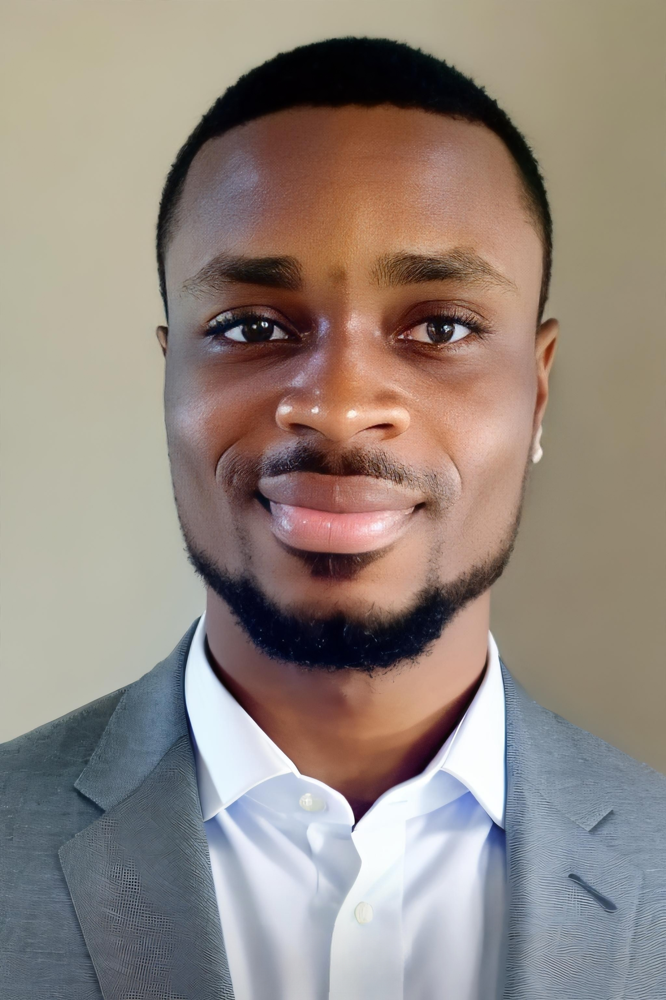

Nwakozo Chukwuka Daniel

Summary
I am a committed and Goal oriented individual with experience in Graphics
Design and Web Design
Education
-
Senior Secondary School Certificate (SSCE)
Promise College, Lagos State | 2017
-
Element of AI -2 ECTS Credits Online Course
University of Helsinki | 2020
Yliopistonkatu, helsinki, Finland
-
Bachelor's Degree - Information Technology
National Open University Nigeria | 2020 till Present
Ahmadu bello way, Victoria Island, Lagos State.
Work Experience
-
Maintenance Operator
Afrione mobile Limited | Jun 2011 - Jul 2017
- Maintenance of all equipments used for production
-
Keeping record of the durability of all equipments used for
production
-
Contacting the service provider in case of any machine/line break
down
- Maintenance of all computing gadgets
-
Market Surveyor
Growing Business Foundation | Jan 2021 - Feb 2021
- Take details of market trends
- Gain critical market feedbacks
-
Collect information on customers opinion, investment and marketing
trends
-
Creative Designer
Chekkit Technologies | Aug 2023 - Present
-
Collaborate with the marketing and creative teams to understand
project requirements and objectives.
-
Generate and present creative concepts that align with brand
guidelines and marketing goals.
-
Design and produce a variety of digital assets, including website
graphics, social media content, email templates, banners, and online
ads.
-
Ensure all designs maintain a consistent look and feel across all
platforms and adhere to the company’s brand guidelines.
Skills
- Coreldraw ⭐️⭐️⭐️⭐️
- Photoshop ⭐️⭐️⭐️
- Adobe Illustrator ⭐️⭐️⭐️
- Canva ⭐️⭐️⭐️⭐️⭐️
- HTML ⭐️⭐️⭐️⭐️⭐️
Awards and Certifications
- Certificate of Completion - UI/UX Design (April 2021)
Others